IBM: Benevity Platform Flow
Designing the consent step for IBM's volunteer badges, from a first-round overlay to a standalone page built on the Carbon Design System.
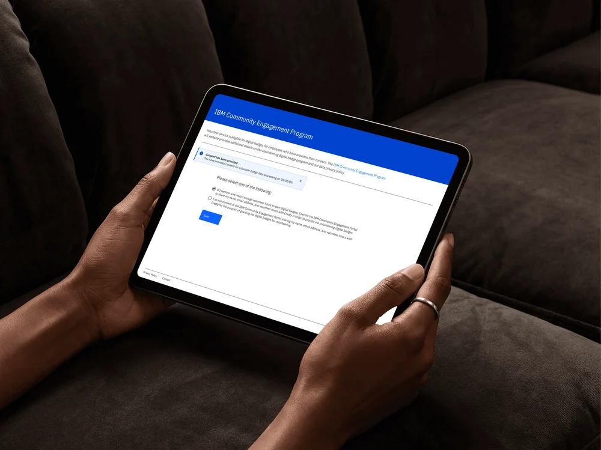
Problem
IBM employees and retirees earn digital badges for volunteering, from an Engagement Award at 40 hours up to Platinum at 4,000, issued through Credly. IBM's CSR team was automating them: log hours in Benevity, and the badge arrives by email. But no hours count until someone accepts the programme's data privacy policy, so the consent pages sat at the start of the whole system. It was a maintenance engagement during a 'deep clean', with quick turnarounds and occasional design tweaks.
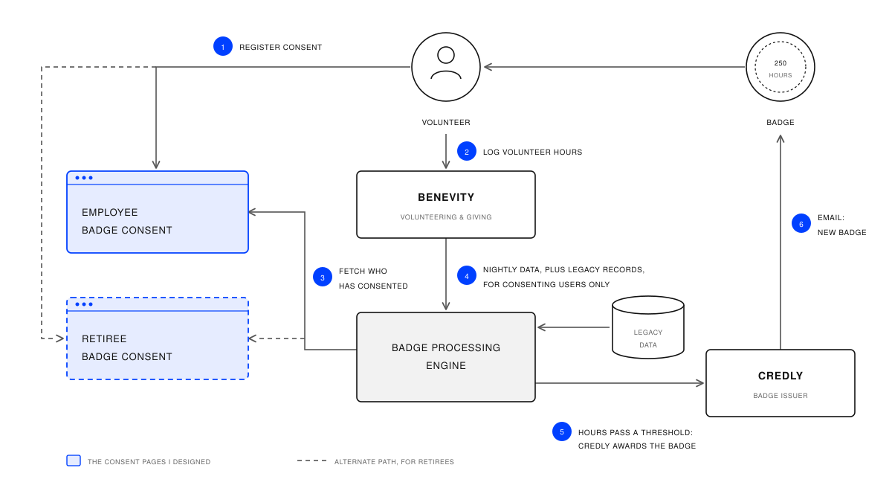
01Overlay
The first concept asked for consent in a Carbon modal, right where people already were.
A 'Before you begin' modal on the w3publisher volunteering page, built from Carbon's modal and radio buttons, with two plain choices: consent, or don't. Picking one dims the other, and Save is the only way forward.
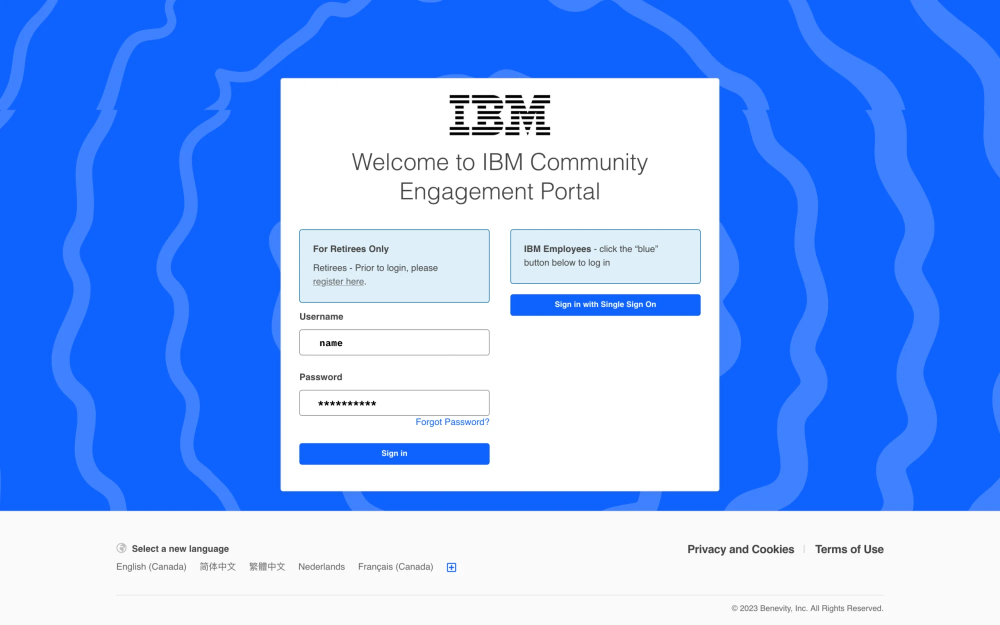
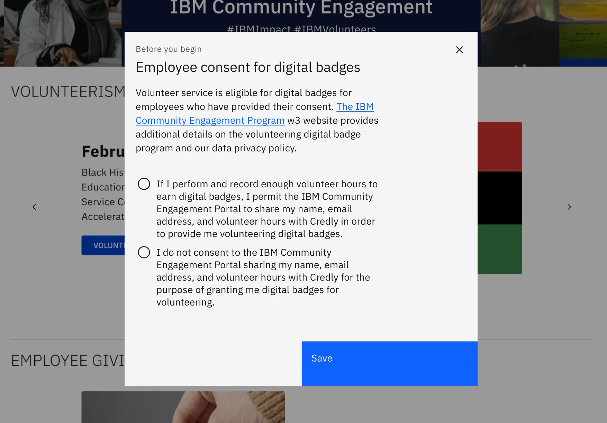
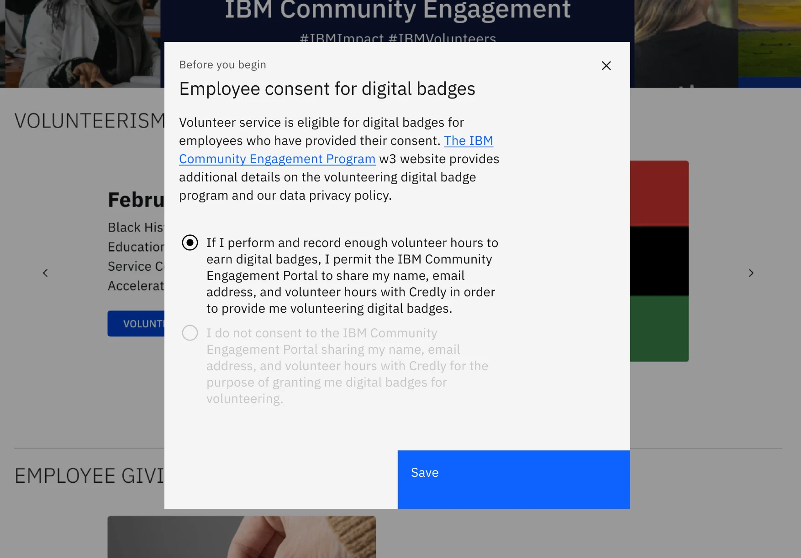
02Pivot
The host platforms couldn't run a modal, so consent moved to its own page, with a link in from each site.
This was the turning point. In review, Kristin Lindeberg, the CSR offering manager, confirmed that Benevity and w3publisher don't allow that kind of customisation. Together we mapped where a link could live: Benevity's Quick Links menu, and a sign-up card on the w3publisher volunteering page.
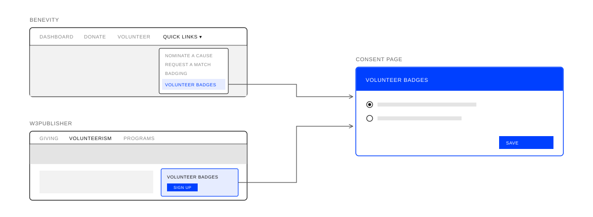
03Page
The consent page stands on its own, built closely on Carbon, with room to read before deciding.
Earlier versions sat inside each host's navigation. The final page drops that, keeping the program's leadspace, the policy, two choices and Save. The client leaned towards photography, so we also explored echoing the banner they already use on Benevity. Staying on Carbon's grid sped up internal review and meant IBM's team could carry it on without me.
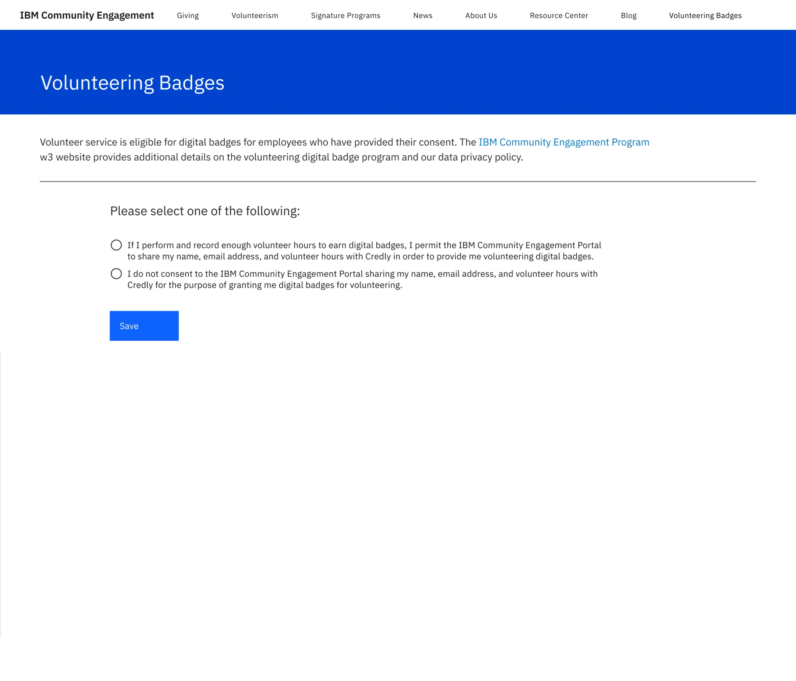
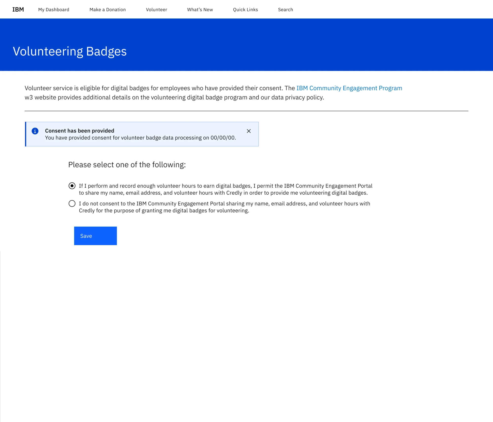
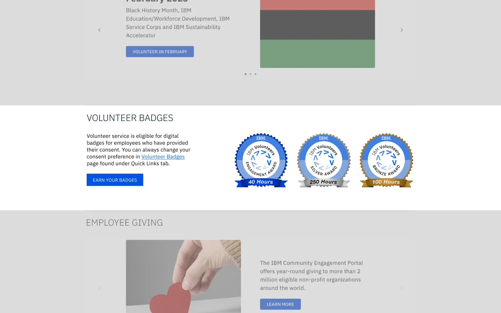
1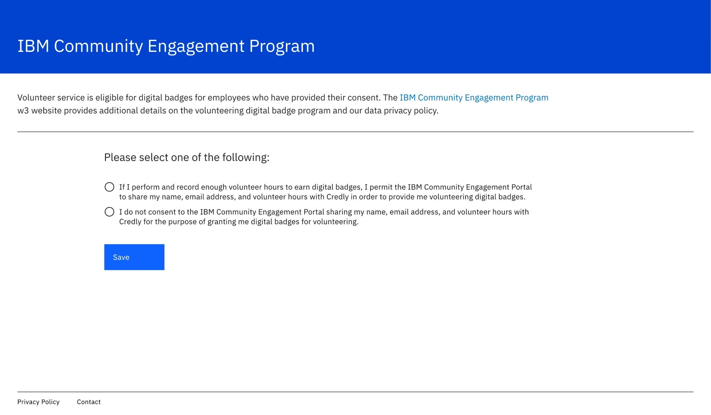
- 1Leadspace
A blue banner with the program's name gives a beat before the policy.
- 2Link
Carbon Blue 60 on a light background, out to the program's w3 page for the full policy.
- 3Notification
Carbon's inline notification. If you've consented before, it gives the date, so nobody is asked twice.
- 4Two choices
Consent or don't, as radio buttons, in the wording agreed with the client.
- 5Save
The only action on the page.
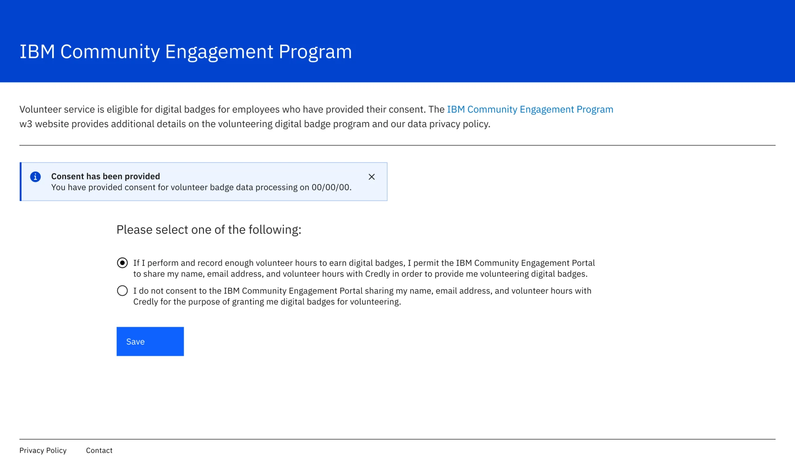
1 2 3 4 5What I learned
The shortest path for people has to be one the platform can host. A page of its own cost one click, but gave both sites a way in and gave people room to read before deciding.